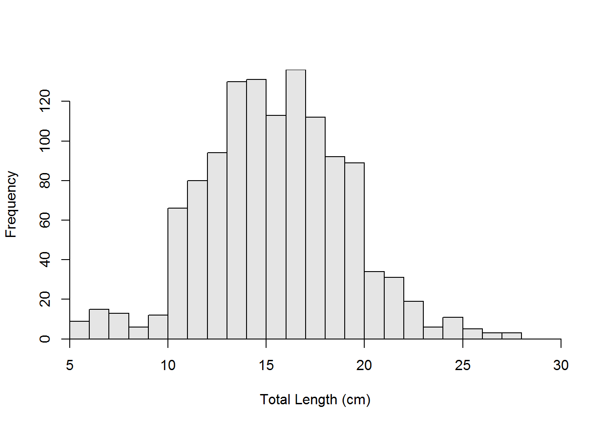

Saginaw Bay Yellow Perch
- Inner location
- Most of the individuals are between 10 and 23 cm. There are no distinctive age-classes.
- The percentage of stock-size fish that are also quality-size is 12% with a 95% confidence interval from 10 to 15%.
- The percentage of stock-size fish that are also preferred-size is 1% with a 95% confidence interval from 0 to 2% 
Estimate 95% LCI 95% UCI
PSD-Q 12 10 15
PSD-P 1 0 2- Outer location
- Most fish are between about 8 and 30 cm, with a distinct mode between 15 and 20 cm. There is a much smaller mode etween 8 and 14 cm. Fish larger than 20 cm tail off nearly linearly.
- The percentage of stock-size fish that are also quality-size is 35% with a 95% confidence interval from 30 to 39%.
- The percentage of stock-size fish that are also preferred-size is 11% with a 95% confidence interval from 8 to 14%

Estimate 95% LCI 95% UCI
PSD-Q 35 30 39
PSD-P 11 8 14- Comparison between the inner and outer locations.
- There is a significant difference in the length frequency distributions of fish between the inner and outer locations (p<0.00005).
- There is a significant difference in the distribution of fish into the Gabelhouse length categories between the inner and outer locations (p<0.00005).
- There is a significant difference in PSD-Q values between the inner and outer locations (p<0.00005).
- There is a significant difference in PSD-P values between the inner and outer locations (p<0.00005).
R Appendix
library(FSA)
library(FSAdata)
library(dplyr)
library(magrittr)
data(YPerchSB1)
cuts <- psdVal("Yellow Perch",units="cm")
YPerchSB1 %<>% mutate(gcat=lencat(tl,breaks=cuts,
drop.levels=TRUE,use.names=TRUE))
ypIn <- filterD(YPerchSB1,loc=="inner")
ypOut <- filterD(YPerchSB1,loc=="outer")
psdIn <- psdCalc(~tl,data=ypIn,species="Yellow Perch",
units="cm",what="traditional")
psdOut <- psdCalc(~tl,data=ypOut,species="Yellow Perch",
units="cm",what="traditional")
gblhTbl <- xtabs(~loc+gcat,data=YPerchSB1)[,-1]
psdQTbl <- gblhTbl[,-3]
psdQTbl[,"quality"] <- rowSums(gblhTbl[,2:3])
psdPTbl <- gblhTbl[,-2]
psdPTbl[,"stock"] <- rowSums(gblhTbl[,1:2])
ks <- ksTest(tl~loc,data=YPerchSB1)
gblhChi <- chisq.test(gblhTbl)
psdQChi <- chisq.test(psdQTbl)
psdPChi <- chisq.test(psdPTbl)